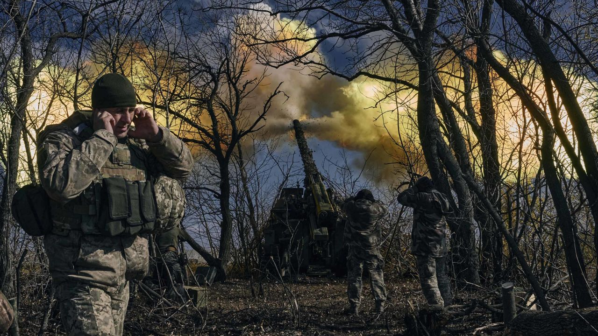

Exclusive: Zelensky warns of ‘open road’ through Ukraine’s east if Russia captures Bakhmut, as he resists calls to retreat
Ukrainian President Volodymyr Zelensky joins CNN to talk about the battle for Bakhmut, President Biden’s recent visit to Kyiv and more. Watch the full exclusive interview on Wednesday, March 8 at 9 p.m. ET.
CNN —
Russian troops will have “open road” to capture key cities in eastern Ukraine if they seize control of Bakhmut, President Volodymyr Zelensky warned in an interview with CNN, as he defended his decision to keep Ukrainian forces in the besieged city.
“This is tactical for us,” Zelensky said, insisting that Kyiv’s military brass is united in prolonging its defense of the city after weeks of Russian attacks left it on the cusp of falling to Moscow’s troops.
“We understand that after Bakhmut they could go further. They could go to Kramatorsk, they could go to Sloviansk, it would be open road for the Russians after Bakhmut to other towns in Ukraine, in the Donetsk direction,” he told CNN’s Wolf Blitzer in an exclusive interview from Kyiv. “That’s why our guys are standing there.”
A weeks-long assault from Wagner mercenary troops, which has picked up pace in recent days, has forced thousands from the city and decimated its infrastructure. But Ukrainian troops have also mounted a dogged defense of the area, stalling Russia’s progress.
Zelensky said his motivations to keep the city are “so different” to Russia’s objectives. “We understand what Russia wants to achieve there. Russia needs at least some victory – a small victory – even by ruining everything in Bakhmut, just killing every civilian there,” Zelensky said.
He said that if Russia is able to “put their little flag” on top of Bakhmut, it would help “mobilize their society in order to create this idea they’re such a powerful army.”

Though Bakhmut does not hold significant strategic value in itself, its road connections to Kramatorsk and Sloviansk – two densely populated, industrial urban hubs to the northwest – mean those cities be next in Russia’s crosshairs if they are able to take control.
Some commanders and lower level officers have questioned the merit of holding Bakhmut amid a rising number of casualties and a growing risk that hundreds or even thousands of Ukrainian troops could get cut off.
But Zelensky dismissed those concerns, saying he has “never heard anything like that” from his commanders.
“We have to think about our people first and no one should be surrounded, encircled – this is very important,” he said.
“The military sees for themselves that we have to stay strong there despite the fact that Russia ruined the whole city and everything there,” Zelensky added. “Troops were helping kids, civilians to leave the town – even up to today people were leaving Bakhmut. We were helping everyone.
Nearly 4,000 civilians – including 38 children – remain inside the battered city, the country’s Vice Prime Minister Iryna Vereshchuk said elsewhere on Tuesday. “We have special evacuation teams, who help, and armored vehicles. But people often stay in basements, leaving no information about their whereabouts,” she said in a televised address. “This makes evacuation much more difficult.”
NATO intelligence meanwhile estimates that for every Ukrainian soldier killed defending Bakhmut, Russian forces have lost at least five, a military official with the alliance told CNN on Monday. The official cautioned the 5-to-1 ratio was an informed estimate based on intelligence.
Wagner troops have been descending on the city since capturing the town of Soledar in January. Should they gain control of Bakhmut, it would mark a rare case of a town changing hands in what has become a sluggish and slow-moving war in Ukraine’s eastern Donbas region.
Elon Musk publicly mocks Twitter worker with disability who is unsure whether he’s been laid off
New YorkCNN —
Elon Musk publicly scoffed at a Twitter employee’s uncertainty about whether he had been laid off in a recent round of cuts and spoke dismissively of the employee’s disability in a series of tweets Monday night. It’s the latest example of the billionaire openly antagonizing his company’s current and former staffers.
Haraldur Thorleifsson, an Iceland-based Twitter senior director, tweeted at Musk that access to his computer had been cut off nine days earlier, when Twitter reportedly laid off some 200 employees. But, Thorleifsson said in his tweet, “your head of HR is not able to confirm if I am an employee or not.”
She was weeks away from maternity leave at Twitter. Then Elon Musk took over
Musk responded in a tweet asking, “what work have you been doing?” When Thorleifsson provided a list of his tasks in response, Musk appeared to cast doubt on several points. “Pics or it didn’t happen,” he tweeted. In a separate tweet, the billionaire said Thorleifsson “did no actual work, claimed as an excuse that he had a disability that prevented him from typing.”
Thorleifsson clarified in a tweet that he has muscular dystrophy, a degenerative disease that he says put him in a wheelchair more than 20 years ago. Thorleifsson, who founded a digital branding company acquired by Twitter in 2021, has been recognized by the United Nations and the president of Iceland for spearheading a charitable effort to build 1,000 wheelchair ramps around Reykjavik to increase the city’s accessibility.
“I’m not able to do manual work (which in this case means typing or using a mouse) for extended periods of time without my hands starting to cramp,” he said. “I can however write for an hour or two at a time. This wasn’t a problem in Twitter 1.0 since I was a senior director and my job was mostly to help teams move forward, give them strategic and tactical advice.”
Thorleifsson did not immediately respond to CNN’s request for comment. Twitter, which has cut much of its public relations department, also did not respond.
It’s not the first time Musk, one of the richest men in the world, has publicly mocked employees at Twitter, the company he bought for $44 billion last year. He has feuded on the platform with former Twitter executives, fired employees who criticized him and in one case publicly called out a former employee’s tweets about him saying that they were the result of “a tragic case of adult onset Tourette’s.”
The jarring spectacle of a company’s owner publicly mocking an employee highlights the unique corporate circus that Twitter workers have experienced over the past year. Musk threatened to bail on the deal, then completed the acquisition only to proceed with multiple rounds of layoffs. Hundreds of former Twitter employees are now taking legal action against the company, alleging broken severance promises and, in some cases, discrimination, including against disabled employees.
Meanwhile, the platform appears to be struggling to stay online. On Monday, Twitter experienced one of its biggest outages since Musk’s takeover, with many users entirely unable to access the site, and others facing issues clicking links or viewing photos, for about an hour. It was the third major technical glitch Twitter has faced in less than a month, as Musk has slashed staff from around 7,500 workers before his takeover to fewer than 2,000 and engaged in a series of other cost-cutting efforts.
Following the exchange with Musk, Thorleifsson said in a tweet that Twitter’s HR head had confirmed he is no longer employed at the company.
“Which is totally ok and it happens all the time … They usually tell people about it but that’s seemingly the optional part at Twitter now,” he said. “Next up though is finding out if Twitter will pay me what they owe me per my contract.”